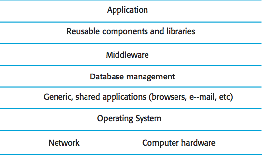
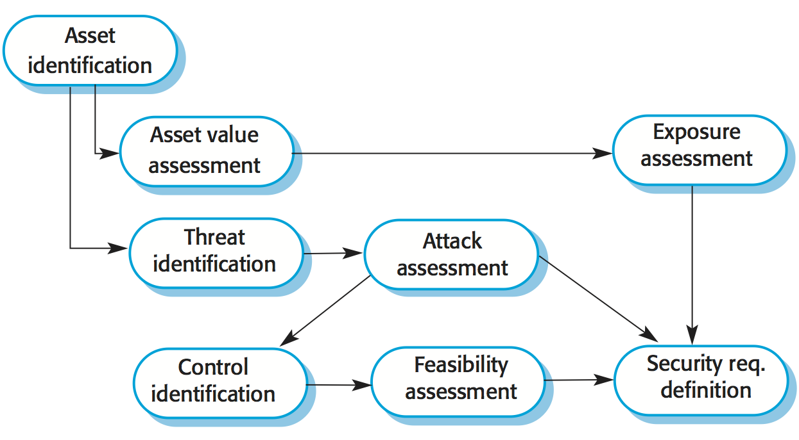
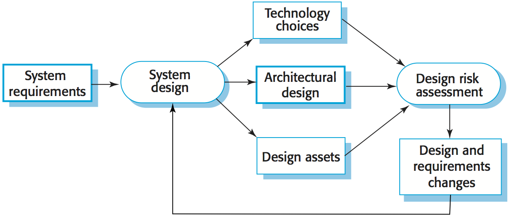

Reference: Sommerville, Software Engineering, 10 ed., Chapter 13
Security engineering is a sub-field of the broader field of computer security. It encompasses tools, techniques and methods to support the development and maintenance of systems that can resist malicious attacks that are intended to damage a computer-based system or its data.
Dimensions of security:
- Confidentiality Information in a system may be disclosed or made accessible to people or programs that are not authorized to have access to that information.
- Integrity Information in a system may be damaged or corrupted making it unusual or unreliable.
- Availability Access to a system or its data that is normally available may not be possible.
Three levels of security:
- Infrastructure security is concerned with maintaining the security of all systems and networks that provide an infrastructure and a set of shared services to the organization.
- Application security is concerned with the security of individual application systems or related groups of systems.
- Operational security is concerned with the secure operation and use of the organization's systems.

Application security is a software engineering problem where the system is designed to resist attacks.
Infrastructure security is a systems management problem where the infrastructure is configured to resist attacks.
System security management involves user and permission management (adding and removing users from the system and setting up appropriate permissions for users),
software deployment and maintenance (installing application software and middleware and configuring these systems so that vulnerabilities are avoided),
attack monitoring, detection and recovery (monitoring the system for unauthorized access, design strategies for resisting attacks and develop backup and recovery strategies).
Operational security is primarily a human and social issue, which is concerned with ensuring the people do not take actions that may compromise system security.
Users sometimes take insecure actions to make it easier for them to do their jobs.
There is therefore a trade-off between system security and system effectiveness.
Security and dependability
The security of a system is a property that reflects the system's ability to protect itself from accidental or deliberate external attack.
Security is essential as most systems are networked so that external access to the system through the Internet is possible.
Security is an essential pre-requisite for availability, reliability and safety.
Reliability terminology
| Term |
Description |
| Asset |
Something of value which has to be protected. The asset may be the software system itself or data used by that system. |
| Attack |
An exploitation of a system's vulnerability. Generally, this is from outside the system and is a deliberate attempt to cause some damage. |
| Control |
A protective measure that reduces a system's vulnerability. Encryption is an example of a control that reduces a vulnerability of a weak access control system. |
| Exposure |
Possible loss or harm to a computing system. This can be loss or damage to data, or can be a loss of time and effort if recovery is necessary after a security breach. |
| Threat |
Circumstances that have potential to cause loss or harm. You can think of these as a system vulnerability that is subjected to an attack. |
| Vulnerability |
A weakness in a computer-based system that may be exploited to cause loss or harm. |
Four types of security threats:
- Interception threats that allow an attacker to gain access to an asset.
- Interruption threats that allow an attacker to make part of the system unavailable.
- Modification threats that allow an attacker to tamper with a system asset.
- Fabrication threats that allow an attacker to insert false information into a system.
Security assurance strategies:
- Vulnerability avoidance
- The system is designed so that vulnerabilities do not occur. For example, if there is no external network connection then external attack is impossible.
- Attack detection and elimination
- The system is designed so that attacks on vulnerabilities are detected and neutralised before they result in an exposure. For example, virus checkers find and remove viruses before they infect a system.
- Exposure limitation and recovery
- The system is designed so that the adverse consequences of a successful attack are minimised. For example, a backup policy allows damaged information to be restored.
Security and attributes of dependability:
- Security and reliability
- If a system is attacked and the system or its data are corrupted as a consequence of that attack, then this may induce system failures that compromise the reliability of the system.
- Security and availability
- A common attack on a web-based system is a denial of service attack, where a web server is flooded with service requests from a range of different sources. The aim of this attack is to make the system unavailable.
- Security and safety
- An attack that corrupts the system or its data means that assumptions about safety may not hold. Safety checks rely on analyzing the source code of safety critical software and assume the executing code is a completely accurate translation of that source code. If this is not the case, safety-related failures may be induced and the safety case made for the software is invalid.
- Security and resilience
- Resilience is a system characteristic that reflects its ability to resist and recover from damaging events. The most probable damaging event on networked software systems is a cyberattack of some kind so most of the work now done in resilience is aimed at deterring, detecting and recovering from such attacks.
Security and organizations
Security is expensive and it is important that security decisions are made in a cost-effective way.
There is no point in spending more than the value of an asset to keep that asset secure.
Organizations use a risk-based approach to support security decision making and should have a defined security policy based on security risk analysis.
Security risk analysis is a business rather than a technical process.
Security policies should set out general information access strategies that should apply across the organization.
The point of security policies is to inform everyone in an organization about security so these should not be long and detailed technical documents.
From a security engineering perspective, the security policy defines, in broad terms, the security goals of the organization.
The security engineering process is concerned with implementing these goals.
Security policies principles:
- The assets that must be protected
- It is not cost-effective to apply stringent security procedures to all organizational assets. Many assets are not confidential and can be made freely available.
- The level of protection that is required for different types of asset
- For sensitive personal information, a high level of security is required; for other information, the consequences of loss may be minor so a lower level of security is adequate.
- The responsibilities of individual users, managers and the organization
- The security policy should set out what is expected of users e.g. strong passwords, log out of computers, office security, etc.
- Existing security procedures and technologies that should be maintained
- For reasons of practicality and cost, it may be essential to continue to use existing approaches to security even where these have known limitations.
Risk assessment and management is concerned with assessing the possible losses that might ensue from attacks on the system and balancing these losses against the costs of security procedures that may reduce these losses.
Risk management should be driven by an organizational security policy.
Risk management involves:
- Preliminary risk assessment
- The aim of this initial risk assessment is to identify generic risks that are applicable to the system and to decide if an adequate level of security can be achieved at a reasonable cost.
The risk assessment should focus on the identification and analysis of high-level risks to the system.
The outcomes of the risk assessment process are used to help identify security requirements.
- Design risk assessment
- This risk assessment takes place during the system development life cycle and is informed by the technical system design and implementation decisions.
The results of the assessment may lead to changes to the security requirements and the addition of new requirements.
Known and potential vulnerabilities are identified, and this knowledge is used to inform decision making about the system functionality and how it is to be implemented, tested, and deployed.
- Operational risk assessment
- This risk assessment process focuses on the use of the system and the possible risks that can arise from human behavior.
Operational risk assessment should continue after a system has been installed to take account of how the system is used.
Organizational changes may mean that the system is used in different ways from those originally planned. These changes lead to new security requirements that have to be implemented as the system evolves.
Security specification has something in common with safety requirements specification - in both cases, your concern is to avoid something bad happening.
Four major differences:
- Safety problems are accidental - the software is not operating in a hostile environment. In security, you must assume that attackers have knowledge of system weaknesses.
- When safety failures occur, you can look for the root cause or weakness that led to the failure. When failure results from a deliberate attack, the attacker may conceal the cause of the failure.
- Shutting down a system can avoid a safety-related failure. Causing a shut down may be the aim of an attack.
- Safety-related events are not generated from an intelligent adversary. An attacker can probe defenses over time to discover weaknesses.
Security requirement classification
- Risk avoidance requirements set out the risks that should be avoided by designing the system so that these risks simply cannot arise.
- Risk detection requirements define mechanisms that identify the risk if it arises and neutralize the risk before losses occur.
- Risk mitigation requirements set out how the system should be designed so that it can recover from and restore system assets after some loss has occurred.

Security risk assessment
- Asset identification: identify the key system assets (or services) that have to be protected.
- Asset value assessment: estimate the value of the identified assets.
- Exposure assessment: assess the potential losses associated with each asset.
- Threat identification: identify the most probable threats to the system assets.
- Attack assessment: decompose threats into possible attacks on the system and the ways that these may occur.
- Control identification: propose the controls that may be put in place to protect an asset.
- Feasibility assessment: assess the technical feasibility and cost of the controls.
- Security requirements definition: define system security requirements. These can be infrastructure or application system requirements.
Misuse cases are instances of threats to a system:
- Interception threats: attacker gains access to an asset.
- Interruption threats: attacker makes part of a system unavailable.
- Modification threats: a system asset if tampered with.
- Fabrication threats: false information is added to a system.
Security should be designed into a system - it is very difficult to make an insecure system secure after it has been designed or implemented.
Adding security features to a system to enhance its security affects other attributes of the system:
- Performance: additional security checks slow down a system so its response time or throughput may be affected.
- Usability: security measures may require users to remember information or require additional interactions to complete a transaction. This makes the system less usable and can frustrate system users.

Design risk assessment is done while the system is being developed and after it has been deployed.
More information is available - system platform, middleware and the system architecture and data organization.
Vulnerabilities that arise from design choices may therefore be identified.
During architectural design, two fundamental issues have to be considered when designing an architecture for security:
- Protection: how should the system be organized so that critical assets can be protected against external attack?
- Layered protection architecture:
Platform-level protection: top-level controls on the platform on which a system runs.
Application-level protection: specific protection mechanisms built into the application itself e.g. additional password protection.
Record-level protection: protection that is invoked when access to specific information is requested.
- Distribution: how should system assets be distributed so that the effects of a successful attack are minimized?
- Distributing assets means that attacks on one system do not necessarily lead to complete loss of system service.
Each platform has separate protection features and may be different from other platforms so that they do not share a common vulnerability.
Distribution is particularly important if the risk of denial of service attacks is high.
These are potentially conflicting.
If assets are distributed, then they are more expensive to protect. If assets are protected, then usability and performance requirements may be compromised.
Design guidelines for security engineering
Design guidelines encapsulate good practice in secure systems design.
Design guidelines serve two purposes: they raise awareness of security issues in a software engineering team, and they can be used as the basis of a review checklist that is applied during the system validation process.
Design guidelines here are applicable during software specification and design.
- Base decisions on an explicit security policy
- Define a security policy for the organization that sets out the fundamental security requirements that should apply to all organizational systems.
- Avoid a single point of failure
- Ensure that a security failure can only result when there is more than one failure in security procedures. For example, have password and question-based authentication.
- Fail securely
- When systems fail, for whatever reason, ensure that sensitive information cannot be accessed by unauthorized users even although normal security procedures are unavailable.
- Balance security and usability
- Try to avoid security procedures that make the system difficult to use. Sometimes you have to accept weaker security to make the system more usable.
- Log user actions
- Maintain a log of user actions that can be analyzed to discover who did what. If users know about such a log, they are less likely to behave in an irresponsible way.
- Use redundancy and diversity to reduce risk
- Keep multiple copies of data and use diverse infrastructure so that an infrastructure vulnerability cannot be the single point of failure.
- Specify the format of all system inputs
- If input formats are known then you can check that all inputs are within range so that unexpected inputs don't cause problems.
- Compartmentalize your assets
- Organize the system so that assets are in separate areas and users only have access to the information that they need rather than all system information.
- Design for deployment
- Design the system to avoid deployment problems
- Design for recoverability
- Design the system to simplify recoverability after a successful attack.